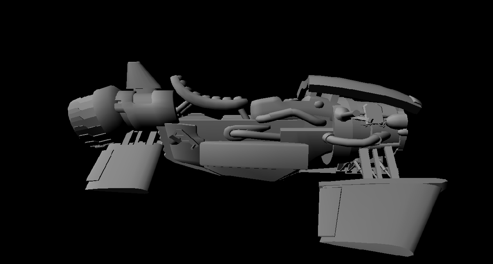
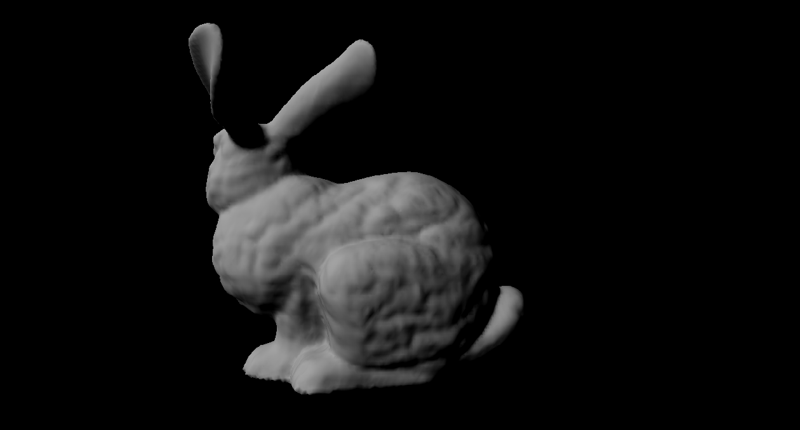
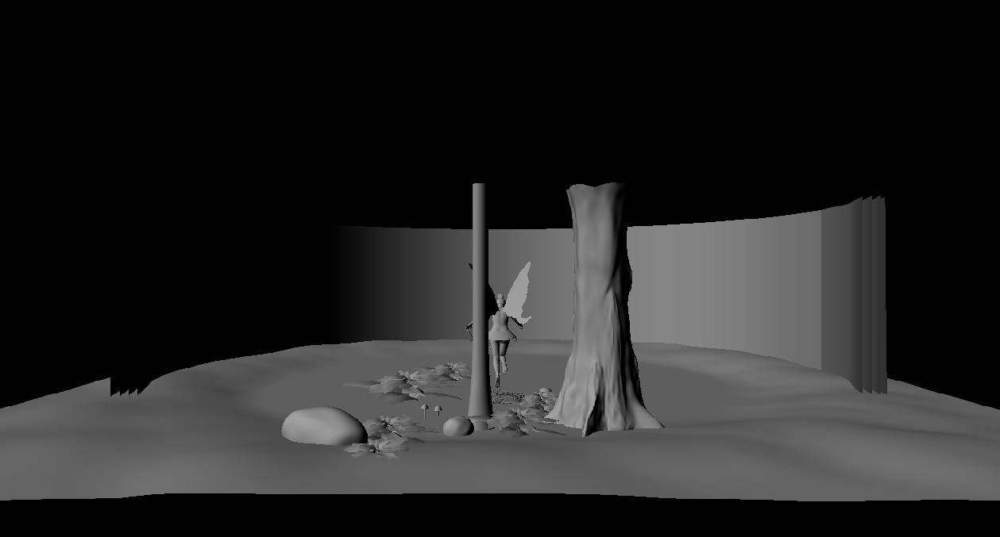
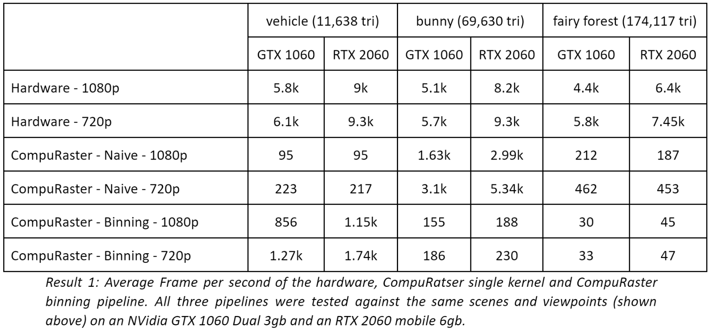
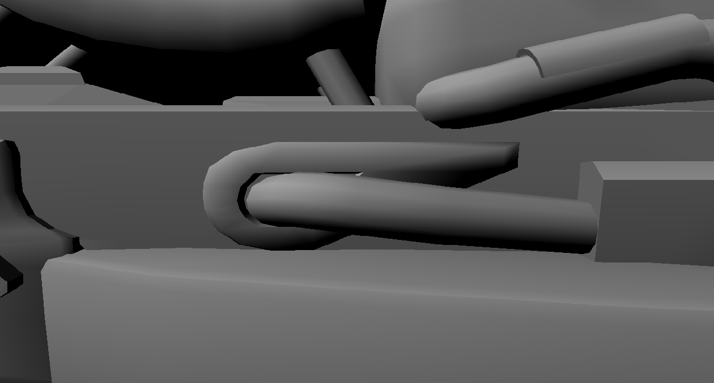
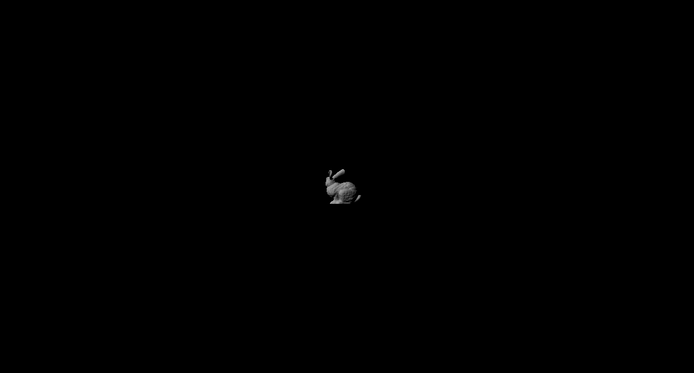
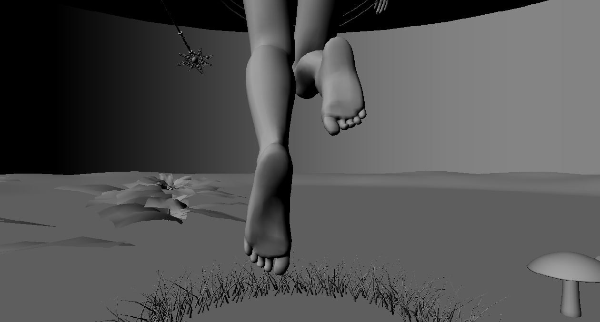
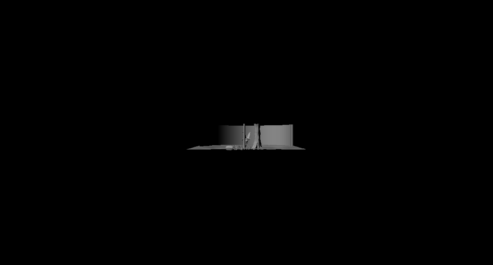

After graduating with a Bachelor of Science in Software development and working over three years as a software developer, I decided to restart my studies to specialise in the gaming industry. I then joined the Game Development major at Digital Arts and Entertainment (DAE), Belgium, where I was introduced to the various aspects of creating games and digital assets such as C++ programming, game design, graphics and 3D arts. More towards the topic at hand, in my second year I was introduced to software ray tracing and rasterization techniques with basics in shading (lambert, phong PBR BRDFs, light theory, etc…) to then move on to Hardware rasterization with DirectX11 and the Effect framework.
This article describes my research around GPU based software rasterization performed as my graduation work during my third year at DAE.
For a long time, dedicated graphic hardware was designed to thrive at one thing and one thing only, digital rendering. Back in the 80s – 90s, hardware had fixed-function pipelines that were at best configurable but not programmable. APIs only allowed the call a limited set of fixed, on chip, features and extending the logic of the hardware required design modifications. This lack of flexibility called for a more practical approach and since the early 2000s GPUs became capable to run shaders instead. Shaders describe simple kernels that can be programmed to customise rendering pipeline stages. This evolution started with the pixel and vertex shaders on dedicated cores and, over the following decade, extended to include more stages such as geometry and tessellation shaders executed on more generic, unified cores. Although more shaders are still being introduced (Task and Mesh shaders - Turing architecture), some stages of the hardware graphic pipeline are still out of reach, rasterization and raster output operations. This is essentially due to the tight trade-off between performance and flexibility in GPU design.
While computing power and programmability of the GPUs increased, new APIs were introduced (CUDA, 2007; DirectCompute, 2009; OpenCl, 2009) to open the unified cores for general purpose tasks (GPGPU), outside of the graphic pipeline. GPGPU kernels have then been intensively used for high computation simulations, smoke, physics, etc… but researchers also became interested in if and how they could be used to provide a viable and fully customizable alternative to hardware pipeline. The high parallelism of the GPU and large number of cores it contains makes it a great candidate for the intensive and repetitive work that is rasterization. GPU accelerated software rasterization has since had several proofs of concept and is a wide-open topic.
With the early access release of Unreal Engine 5 in May 2021, Epic Games proved how capable a well-designed GPU base software rasterizer can perform. While Nanite is mostly out of scope for the specific focus of this paper, it still shows some of the constraint and challenges in building a software renderer as well as the benefits; for them being to improve micro-polygon rasterization performances and break the triangle count limit. Here, the rasterization focuses on triangle work rather than pixel which is desirable as their target micro-polygon meshes contain sub-pixel sized triangles and more triangles than pixels. As implied by the specific purpose of Nanite’s rasterizer it isn’t a complete replacement of the hardware pipeline, it is here to take over where the traditional pipeline lacks in efficiency or practicality: with pixel sized polygons. In the case of larger triangle patches, the hardware pipeline is still the go to solution as it is good at it.
Aside from Nanite, this research is based on two notably successful GPGPU rasterizers from the past decade that are designed towards a more versatile use.
Back in 2011, S. Laine and T. Karras proposed CudaRaster, a CUDA based sort-middle rasterization pipeline. Compared to their predecessor FreePipe, their implementation preserves primitive ordering (required by transparency for example). CudaRaster also offers a solution less prone to triangle size inefficiency compared to FreePipe which processes one triangle per thread resulting in low GPU occupancy and low efficiency when triangles are large (one thread rasterizes and shades many pixels). They achieved this by adding an intermediate processing step to divide the scene in screen tile and bins and switching from per triangle to per tile/bin work halfway through the pipeline. Comparing pure rasterization power, CudaRaster offered frame times in the same or one order of magnitude compared to the Hardware counterpart and one to two orders of magnitude compared to FreePipe.
In 2018, Kenzel, M. et al. presented a memory bounded alternative to CudaRaster, cuRe. They designed their pipeline in a streaming manner, allowing stages to be performed in parallel, to maximise GPU utilisation and bound the memory requirement of a draw call. In a sequential approach (CudaRaster), the memory is bound to the most expensive stage and data sharing must be done through global memory. cuRe uses a fixed sized producer/consumer system where a group of threads are assigned to specific stages and specific work queues, it can also limit the queue sizes to take advantage of group shared memory instead of relying on global buffers. Consumer groups wait for enough data to be queued and then process the available batches, while producer queues will process inputs until the available queues are full. The process is repeated until the entire draw call is performed. While still being slower than CudaRaster, due in part to the overhead of scheduling, cuRe still performs one order of magnitude from the hardware pipeline. It also has the advantage to not be architecture dependent or resolution bound (CudaRaster doesn’t work with 4k) and succeed with large scenes where CudaRaster or FreePipe cannot, due to memory consumption.
In turn, I want to present in this article, my own attempt at implementing a C++/DirectCompute based Software Rasterizer using DX11. This implementation should be able to perform on any DX11 capable hardware and not be limited by the output resolution.
A first approach explored to implement CompuRaster was to emulate FreePipe’s behaviour as a single mega kernel where the complete pipeline is scheduled on a per triangle basis. The compute shader is configured to use the maximum allowed thread (1024 with DX11) and the dispatch size is calculated according to the number of triangles to provide one triangle per thread.
The thread work starts by calculating a global dispatch thread ID and using it to fetch the triangle index triplet as well as vertices. Vertices are then transformed from object space to screen space and culled against the frustrum. If all the vertices pass the culling test and the triangle is not backfacing, the integer bounding box is computed and the triangle is rasterized within a double for loop against all the pixels inside the bounding box. Finally, each pixel inside the triangle writes to the depth buffer using an atomic min and is shaded.
This straightforward approach is simple to schedule and doesn't require lengthy intermediate state caching in global memory which diminishes read and write latency but, for one thing, does not retain primitive ordering and suffers from several performance inefficiencies. Much like FreePipe, it works well for large batches of small triangles, but performance rapidly drops when a few triangles cover large areas as a single thread will be rasterizing and shading many pixels. Another caveat of this one kernel approach is that vertices are transformed for each triangle they belong to, creating duplicated work. Then for each early out of the pipeline (triangle clipped, back face culling, small bounding box), the thread becomes idle until the next draw call, creating occupancy inefficiencies. Finally, depth buffering, and shading requires atomic operation or locking as several threads could be processing overlapping triangles at the same time and incur race conditions.
Although this research aims at presenting a more globally efficient solution this gave a nice baseline to have some reference display and framerates, and ensure that the DirectX resources, input primitives, and output depth and colour were properly loaded and handled. It also gave a first overview of the considerations and limitations involved in implementing GPU accelerated rasterization pipeline.
As an attempt at building a more versatile rendering pipeline, providing more efficient scheduling and overcoming the under-utilisation of the GPU or race conditions for pixel shading, the CompuRaster pipeline underwent a significant re-design.
First, the stages are broken down into separate kernels dispatched sequentially. Each stage then can be configured according to the specifications and workload of the stage, and the context of the work can be changed from a per triangle to a per screen region basis between the different steps of the program. This technique requires having to write intermediates results in buffers to pass them down across the rasterizer but the idea is that the benefits would hide the cost of global memory read/write.
The geometry step is split in two dispatches. First the vertex transformation kernel runs one thread per vertex and transforms from object to projection space using the world-view-projection matrix, perspective divide and remapping the 2D coordinates to screen space. Vertices are selected using a computed global dispatch thread ID and write the transformed data output in a global buffer using the same index. It keeps all vertices ordered and ensures that each vertex transformation is only performed once. The vertex transformation compute shader uses groups of 512 threads and the dispatch dimensions are computed using the number of vertices divided by the number of threads, rounded to the upper integer value.
Once the vertex processing is done, the triangle setup stage is dispatched in a similar fashion, but this time by assigning one thread per triangle. The triangle indices triplet is retrieved from the index buffer using the global dispatch thread ID then each triangle vertex is tested against the frustrum for culling. If all vertices pass, the edge equations, inverse area and integer bounding box are computed and stored as output as a 1 to 1 input/output mapping.
The resulting output buffer now contains a boolean value indicating whether the triangle is culled so it can be discarded in later stages, and all the necessary data for rasterization.
The first pipeline stage that really differs with the naïve approach is the addition of a bin rasterizer. Similarly to CudaRaster and cuRe, it is used to pre rasterize triangles to larger bounded areas of the screen and prepares to change the input processing to be screen based further down the pipeline. The binning kernel is harder to schedule compared to the previous geometry stages as we cannot predict how many output bin/triangle relations will be generated and shaders don’t have dynamic sized buffers. As a work-around that allows preserving input ordering, CompuRaster follows CudaRaster’s example and divides the work in large batches between each thread group and produces one per-bin queue per thread group.
First, the input triangles are split in equal size batches throughout all the dispatch groups. Then each thread in a group is assigned a triangle based on their thread ID and stores its ID and bounding box in shared memory if it was not culled. For the second part of the compute shader, the thread is assigned a bin number and will test all the shared memory triangles for overlap, storing the triangle id in a packed manner inside the output queue if they do. The process is repeated until the entire group batch is processed. This requires groups to have a minimum of threads equal to the number of bins. When the batch is processed, the total count of overlapping triangles is stored at the beginning of the generated queue. For this implementation, bins of 8x8 tiles (tiles are 8x8 pixels) were found to deliver best performance. The interest of the queuing technique is that it avoids using inter-group synchronisation and atomic operations as they each have their own write memory location. One issue CompuRaster has at this stage is that it requires allocating a large enough buffer to store all the overlapping triangles per queue per bin. Being unknown, memory is allocated as if every single triangle could overlap every single bin. This is highly unlikely, and result is a lot of memory wasted but no other alternative was implemented this far.
A possible solution for this could be a retry mechanism to alleviate the memory consumption as does CudaRaster. The queue size is first set to an estimated value and the pipeline keeps track of overflow, if it happens the draw call will be restarted with an increased queue size. This works relatively well for them assuming the workload doesn’t change significantly between frames.
Once all the triangles are queued in their respective bins, a coarse rasterization stage is dispatched to compute the tile coverage of triangles per bins. Each bin is assigned to a thread group, 128 threads each (128 seemed to provide the best overall performance). To collect all the triangles across all the generated per bin queues and output a packed list, each thread uses its ID and the stored per-queue triangle count to find their next dedicated triangle and calculate an ordered packed output index to store the triangle tile coverage bitmask as well as the triangle index. The total count of triangles per bin is also stored in a global memory buffer to indicate the batch size for the fine rasterizer. It is somewhat necessary in our case as the tile coverage buffer generated on the stage suffers from the same memory inefficiency as the output buffer from the bin rasterizer. We don’t want to iterate the entire buffer size in the fine rasterizer when we can easily know the number of relevant data.
The final stage of the pipeline is the fine rasterizer where the final, per pixel rasterization is performed. To process all the screen tiles, a fixed number of thread groups is dispatched (i.e. 256) each having 64 threads (one thread per pixel in a tile). A thread group starts by picking a tile index using a global atomic counter, each thread then processes a triangle from the tile coverage buffer and stores it in a shared memory ring buffer if the tile bit is set in the coverage mask. This process is repeated until 64 triangles are collected or all the triangles for that tile have been tested. This is implemented as an effort to avoid having long hanging threads in the event the triangle they process is not actually overlapping the tile (due to branching conditions). Also, as many, if not all the 64 pixels within a tile could be inside a triangle, rasterization data cached in the triangle setup stage that are also collected (triangle index, edge equations, inverse area, bounding box) are stored in shared memory to reduce redundant global memory access. Each thread then calculates its pixel coordinates, and for each cached triangles info, pixel-inside tests are performed using an incremental half-space rasterization.
As each thread processes its own pixel and each triangle sequentially, there is no need for read/write synchronisation for the depth and colour buffers. The depth and colour can also be locally cached throughout the shader and written to global memory only once when the work is done, reducing memory accesses.
I should first mention the following results presented below should be taken lightly as the CompuRaster implementation at the time of this article suffers from several defects. Firstly the overall rendering has artefacts, there seems to be an issue where smaller sized triangles failed to be rasterized. As neither of the CompuRaster implementations supports clipping, comparing them against each other is relevant as they still process the same amount of geometry given the same viewpoints. Also in certain cases, such as bigger scenes or sometimes when frustrum culling happens on part of the meshes, the pipeline hangs and device removal occurs.
To identify the overall rasterization power of CompuRaster, three scenes (vehicle mesh, the stanford bunny and a fairy forest scene borrowed from cuRe) were tested against the hardware pipeline, the naive version of CompuRaster as well as the binning version of CompuRaster.
Each scene was also rendered in 1080p and 720p resolutions. The average FPS of each test can be found on the table below.
  

Unsurprisingly, the Hardware pipeline wins on all cases but the goal was to beat it anyways, it is here as a reference point to compare the base frame rate number as well as for the fluctuations in frame rates when changing screen fill rate or resolution. The naive approach of CompuRaster dominates its binning counterpart for the stanford bunny which was quite expected as it is composed of many small and regular triangles. As does Freepipe with the stanford buddha [S. Laine and T. Karras], the per triangle scheduling allows to use a lot of threads with a fairly concise amount of pixel work each. Halving the resolution, nearly doubles the performance which also confirms this pipeline is bound to triangle size. On the other hand the binning rasterizer wins firmly (x10 - x18) for the lower polycount vehicle, this mesh contains larger triangles overall and rasterizing on a screen tile basis allows for a more balanced work.
On the other hand, CompuRaster - Binning’s performance appears tightly bound to triangle count and the frame rate will drop more than linearly as the triangle count increases. The fairy forest has x14 more triangles than the vehicle but we get 1/38th of the performance. Although it would be natural that the frame rate lowers as the geometry increases, this nonlinear loss would incur that the bottleneck doesn’t lie in the geometry stages. CompuRaster processes triangles and vertices per thread only once, and even though the kernel splitting requires more reading and writing to global memory than the single kernel approach, CudaRaster employing the same method doesn’t suffer the same problem. The current binning implementation, specifically during the coarse rasterizing stage, doesn’t early out when all bin queues are empty and generates a lot of per thread empty work to traverse all queues which might partially explain the loss of frame rate. This suspicion is also reinforced by the fact that the framerate isn’t proportional to the resolution (between x1.1-x1.4 increase for x2.25 less pixels).
Another test configuration that can be significantly relevant is rendering with different views, changing the screen coverage. Close range render provides insights on how the implementation performs when a large number of the triangles are culled out and online few covers the viewport. While a long range render on the other hand shows if the pipeline takes advantage of the smaller triangle to pixel ratio or of the large empty spaces to increase frame time.
Vehicle Close-up / Vehicle Far shot

Bunny Close-up / Bunny Far shot

Fairy Forest Close-up / Fairy Forest Far shot


For the second test, the performance of CompuRaster - Naive follows the expectations. Where all triangles cover a really small amount of pixels, the frame rate gain is significant due to all threads performing a small and balanced amount of work in parallel. It even closes the gap with the hardware pipeline which indicates that, discarding the fact that it doesn’t preserve ordering, this implementation is well suited for small and detailed geometry. The efficiency of its binning counterpart is much more peculiar and unwanted as there doesn’t seem to be a significant gain between viewpoints for the vehicle and it even loses FPS as the polycount increases. This result, combined with the one of the previous test, validates that CompuRaster binning is bottlenecked by the rasterization stages.
While state of the art GPGPU software rasterizers have been proposed throughout the last decades, I was not successful in implementing a DirectCompute version that would provide real-time performance. The obtained results for the binning implementation can be encouraging as they show this approach is less constrained by the size of the primitives which is desirable for a multipurpose rendering pipeline (mesh rendering vs post processing). Although it is not precisely identified, the consistency of the test results indicates possible bottlenecks around the rasterization phase of CompuRaster which provides a starting point for future investigation and improvements.